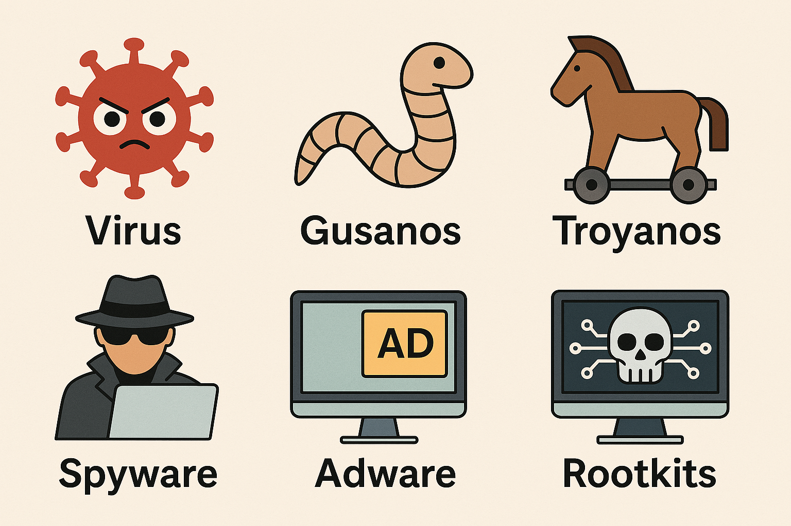
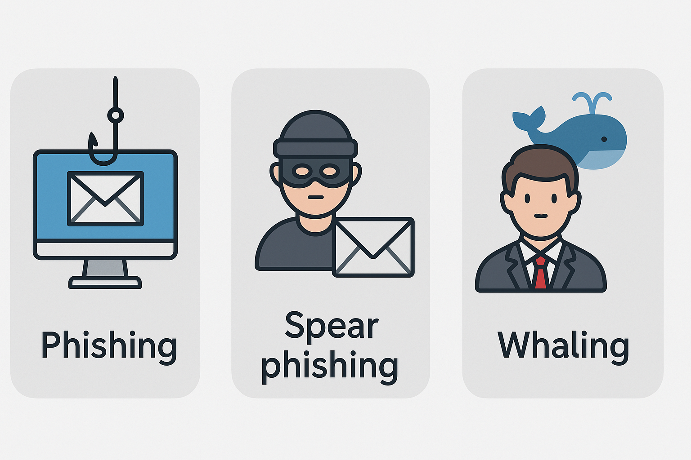
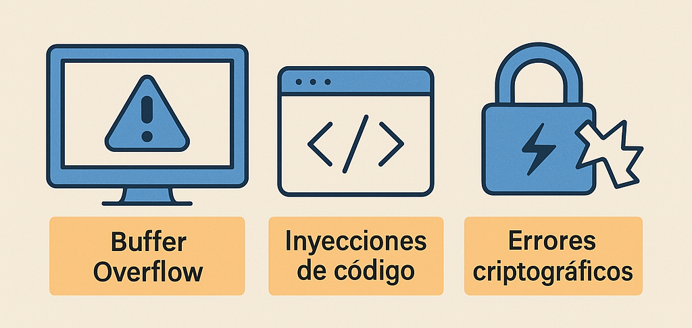
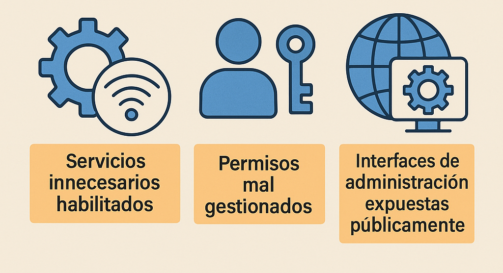
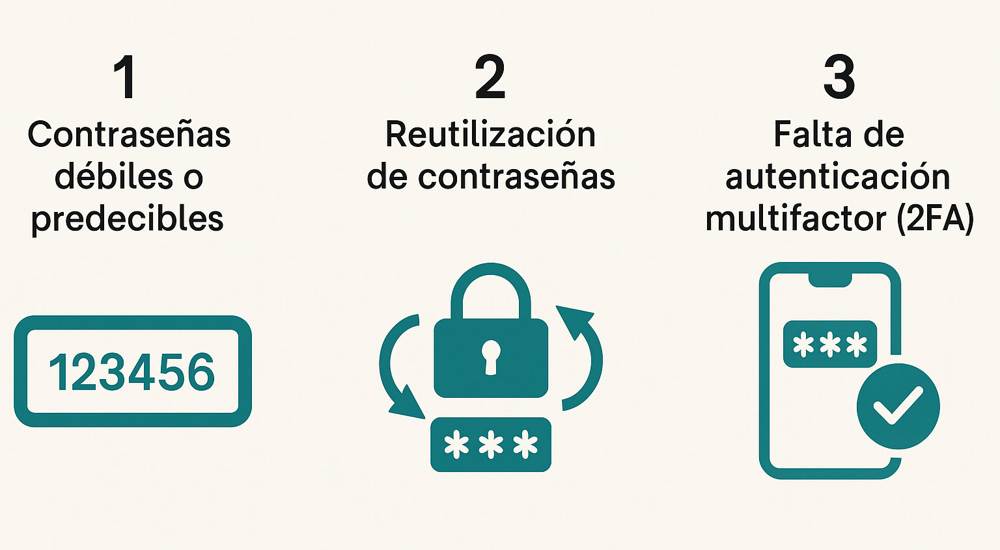
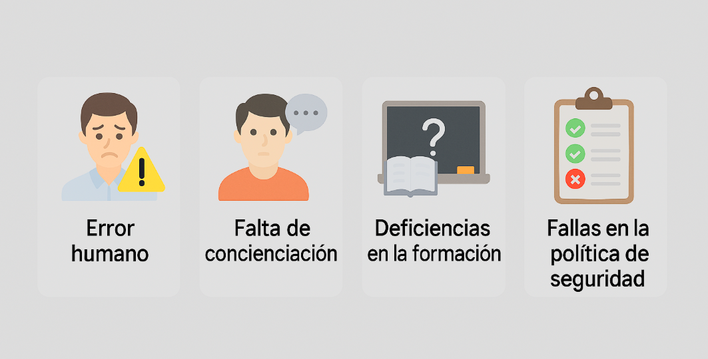
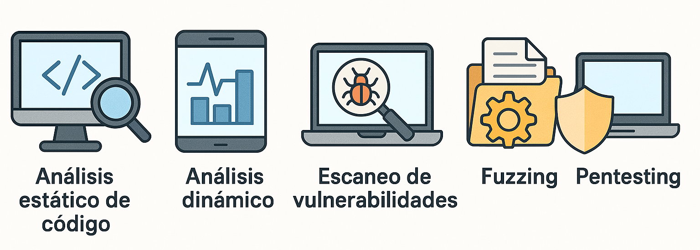
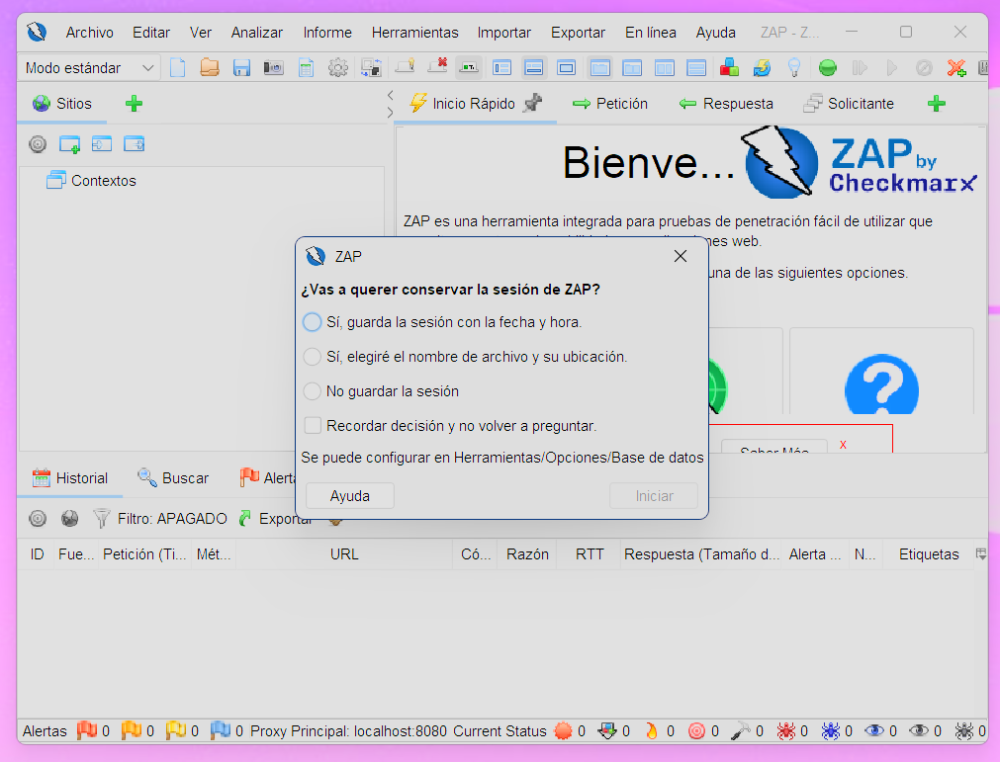

Tema 02 - Amenazas y Vulnerabilidades en Sistemas Informáticos🕵️♀️ Amenaza vs Vulnerabilidad⚠️ Clasificación de las amenazas 🦠 Amenazas basadas en software malicioso (Malware): 🎣 Amenazas mediante Ingeniería Social avanzada:🧠 Mini Test: Ingeniería Social🚧 Amenazas dirigidas a disponibilidad y rendimiento:🔓 Amenazas internas y externas específicas:🧠 Mini Test: Amenazas⚠️ Clasificación de vulnerabilidades🛠 Vulnerabilidades técnicas🧩 Vulnerabilidades de configuración🔐 Vulnerabilidades en la gestión de contraseñas y autenticación🤦 Vulnerabilidades humanas y organizativas🔍 Técnicas avanzadas para identificar vulnerabilidades🧠 Mini Test: Vulnerabilidades📃 ¿Qué hacer después de identificar amenazas y vulnerabilidades?🧪 Práctica guiada: Detección de vulnerabilidades con ZAP y Juice Shop🎯 Objetivo de la práctica🧭 Pasos a seguir🔍 Actividad práctica para el alumnado
Aunque parecen términos similares, no son lo mismo:
Amenaza: Evento o elemento externo que podría afectar negativamente nuestro sistema informático.
Vulnerabilidad: Es un fallo o debilidad interna de nuestro sistema que podría ser explotado por una amenaza.
Es sencillo, piensa en las amenazas como un ladrón y en las vulnerabilidades como ventanas abiertas en casa. ¡La combinación de ambas es muy peligrosa!
Cuando hablamos de amenazas informáticas, no nos referimos solo a hackers encapuchados tecleando a oscuras (aunque también). Existen muchos tipos de ataques que pueden afectar a un sistema, y no todos se presentan de forma evidente. Algunas amenazas entran por la fuerza, otras se cuelan disimuladamente y algunas simplemente engañan al usuario para que les abra la puerta. En este apartado vamos a conocer las principales categorías de amenazas, con especial atención a las basadas en software malicioso.
El malware (del inglés malicious software) es el término general para describir cualquier software diseñado con intenciones dañinas. Es como una familia de villanos, cada uno con sus habilidades.

Virus informáticos: Los virus informáticos actúan como un parásito: necesitan "pegarse" a otros archivos o programas para activarse. Cuando el usuario ejecuta el archivo infectado, el virus se propaga, modifica o destruye datos. Aunque hoy en día son menos frecuentes, siguen siendo peligrosos, especialmente en entornos con medidas de seguridad desactualizadas.
Gusanos (Worms): Se propagan por sí solos en redes. No necesitan la ayuda del usuario. Basta con que un ordenador esté conectado a una red para que un gusano empiece a clonarse y repartirse como si no hubiera un mañana. Un ejemplo conocido fue el gusano Blaster, que en 2003 causó miles de reinicios automáticos en ordenadores con Windows XP. Un caos absoluto.
Troyanos: Se hacen pasar por software legítimo para engañar al usuario. Se presentan como programas útiles (juegos, utilidades, cracks, etc.), pero una vez instalados, permiten el acceso remoto al equipo, roban información o instalan más malware.
Spyware: Espía y recoge información sin que lo notes. Se instalan en tu sistema sin que lo sepas y se dedican a observar todo lo que haces. Desde registrar las páginas que visitas, hasta capturar lo que escribes con el teclado (incluido contraseñas). Muchos se instalan "de rebote" cuando descargas software gratuito desde fuentes poco fiables (¿quién dijo softonic?). Un spyware puede incluso activar la webcam o el micrófono sin tu consentimiento. Un caso famoso fue el de algunas versiones de software gratuito que instalaban barras de herramientas en el navegador... y de paso, espiaban todo tu tráfico.
Adware: Bombardea con publicidad no deseada. Es el primo molesto del spyware. Su función principal no es espiar, sino llenarte de publicidad molesta. Ventanas emergentes, banners que no cierran, redirecciones extrañas… Aunque algunos adware no son maliciosos por si mismos, muchos afectan al rendimiento del sistema, consumen recursos y pueden abrir la puerta a otros tipos de malware. Además, los anuncios que muestran a menudo son de sitios poco fiables, con más trampas todavía. Por eso, aunque algunos vengan con programas gratuitos como “parte del trato”, es mejor evitarlos siempre que se pueda.
Rootkits: Se ocultan profundamente en el sistema para tomar el control de forma sigilosa. Su misión es ocultar la presencia de otros tipos de malware, permitiendo que operen sin ser detectados. Se integran profundamente en el sistema operativo, incluso a nivel de kernel (el “corazón” del sistema), lo que los hace extremadamente difíciles de detectar y eliminar. Un rootkit puede permitir que un atacante tenga control total del equipo durante meses sin que nadie lo note. En entornos corporativos, esto puede significar espionaje industrial, robo de información confidencial o sabotaje silencioso.
La ingeniería social es el arte de manipular a las personas para que entreguen información confidencial o realicen acciones que comprometan la seguridad de un sistema. A diferencia del malware o los ataques técnicos, aquí el objetivo no es explotar una vulnerabilidad en el sistema... sino en el usuario. Cuanto más sofisticada es la ingeniería social, más difícil es detectarla, ya que muchas veces se apoya en la confianza, el miedo o la urgencia.

📬Phishing tradicional: Mensajes que intentan engañar al usuario para obtener información personal. Es la técnica más conocida y extendida. El atacante envía correos electrónicos masivos, haciéndose pasar por empresas legítimas (como bancos, servicios de mensajería o plataformas de streaming). Estos correos suelen contener enlaces que llevan a páginas falsas pero muy parecidas a las reales, donde se pide al usuario que introduzca datos personales, contraseñas o información bancaria.
🔍 Ejemplo realista: Recibes un correo de "Correos" indicando que hay un paquete pendiente de entrega y que debes pagar 2,99€ para recibirlo. El enlace lleva a una web falsa donde, si introduces tus datos, los ladrones se quedan con tu tarjeta de crédito.
🎯Spear phishing: Phishing muy personalizado dirigido específicamente a individuos o empresas concretas. A diferencia del phishing tradicional, aquí el ataque es personalizado. El ciberdelincuente investiga previamente a la víctima (empresa, empleado, cliente...) para enviarle un mensaje mucho más convincente. Puede incluir datos reales como tu nombre, tu puesto, tus compañeros o incluso proyectos en los que trabajas.
🔍 Ejemplo realista: Una persona del departamento de contabilidad recibe un correo que parece venir del director financiero, solicitando el pago urgente de una factura adjunta. El lenguaje es creíble, el remitente está falsificado y el adjunto contiene malware. Como hay presión de tiempo y la jerarquía influye, la víctima puede caer fácilmente.
💼 Whaling: Apunta a altos cargos o directivos (peces gordos) para conseguir accesos privilegiados. Este tipo de ataque va un paso más allá y apunta directamente a los "peces gordos" de una organización: directores, CEO, jefes de departamento... El objetivo es engañar a alguien de alto nivel (o suplantarlo) para obtener información estratégica, acceso privilegiado o grandes transferencias de dinero.
🔍 Ejemplo realista: El CEO de una empresa recibe un correo que parece venir del asesor legal, indicando que se necesita confirmar urgentemente la transferencia de fondos para cerrar una operación confidencial. El correo es muy formal, incluso incluye firmas y logos. Como todo parece oficial y delicado, el CEO lo ejecuta sin verificar.
Tip
💌Es un buen momento para ir a la bandeja de correo no deseado y disfrutar de la fiesta.
❓ Preguntas tipo test (elige la opción correcta)
¿Qué es el spear phishing?
A) Un correo falso enviado a miles de personas al azar.
B) Un ataque dirigido y personalizado hacia una persona específica.
C) Una técnica para infectar ordenadores con virus.
D) Un ataque que usa fuerza bruta.
¿Cuál de los siguientes elementos suele usarse en un ataque de whaling?
A) Correos muy mal redactados.
B) Suplantación de identidad de altos cargos.
C) Páginas web llenas de anuncios.
D) Mensajes de texto sobre premios falsos.
El phishing tradicional se caracteriza por:
A) Hackear redes WiFi públicas.
B) Fingir ser un contacto de confianza cercano.
C) Enviar correos masivos con enlaces a páginas falsas.
D) Atacar únicamente a bancos.
🕵️♀️ Escenarios: ¿Qué tipo de ataque es?
Lee cada situación y di qué tipo de ataque representa:
Recibes un correo de tu banco indicando que ha habido actividad sospechosa y te pide que verifiques tu cuenta haciendo clic en un enlace. El remitente parece legítimo pero la URL es rara.
El responsable de tu equipo recibe un correo del “director de recursos humanos” pidiéndole la lista completa de empleados y sus datos personales para actualizar el sistema. El lenguaje y firma coinciden con los usados habitualmente.
El CEO de la empresa recibe una solicitud urgente para autorizar una transferencia de 50.000€ por parte del "departamento legal", asegurando que es parte de una adquisición confidencial.
Respuestas:
B - Un ataque dirigido y personalizado hacia una persona específica.
B - Suplantación de identidad de altos cargos.
C - Enviar correos masivos con enlaces a páginas falsas.
Phishing tradicional
Spear phishing
Whaling
No todas las amenazas buscan robar información o espiar. Algunas tienen un objetivo mucho más directo y molesto: evitar que el sistema funcione correctamente. Imagina que una web deja de estar disponible justo cuando miles de usuarios quieren entrar, o que una red se satura tanto que ni siquiera puedes enviar un correo. Este tipo de ataques afectan a la disponibilidad, uno de los pilares básicos de la seguridad (junto con la confidencialidad y la integridad).
Suelen ser ataques muy visibles y, en muchos casos, muy eficaces si no se han tomado precauciones adecuadas.
Denegación de Servicio (DoS): Un solo atacante satura los recursos. Un ataque DoS (Denial of Service) se basa en saturar un sistema, servidor o red con peticiones falsas hasta que se colapsa y deja de responder a las peticiones legítimas de los usuarios reales. Es como si intentaras entrar en una tienda y hubiera cien personas bloqueando la puerta sin comprar nada. Tú no puedes entrar, y el negocio pierde dinero.
🔍 Ejemplo realista: En 2000, un adolescente canadiense de 15 años lanzó un ataque DoS contra sitios como Yahoo!, eBay, CNN y Amazon. Saturó sus servidores con miles de peticiones por segundo, provocando caídas generalizadas. Fue uno de los primeros casos mediáticos de este tipo de ataques.
Denegación de Servicio Distribuida (DDoS): Ataques simultáneos desde múltiples equipos, muy peligrosos por su complejidad y magnitud. Una versión aún más potente (y peligrosa) del DoS es el ataque DDoS (Distributed Denial of Service). En este caso, el ataque proviene de cientos o miles de dispositivos repartidos por todo el mundo, generalmente infectados previamente y controlados por un atacante (lo que se conoce como una botnet). La red del atacante lanza el ataque de forma coordinada, haciendo que sea mucho más difícil de bloquear o identificar.
🔍 Ejemplo realista: En 2016, un ataque DDoS masivo dirigido a Dyn (una empresa de DNS) tumbó servicios como Twitter, Spotify, Reddit, Netflix y PayPal. El ataque fue lanzado a través del malware Mirai, que infectaba dispositivos IoT mal protegidos (cámaras IP, routers, etc.). Se considera uno de los ataques más grandes de su tipo, alcanzando los 1,2 Tbps de tráfico.
Este tipo de amenazas no solo causan pérdidas económicas, sino también de reputación. En entornos empresariales, un sitio web caído o una red inoperativa puede suponer horas de inactividad, pérdida de clientes y una imagen pública muy perjudicada.
🧠 Consejo para recordar:
DoS: un solo atacante satura el sistema.
DDoS: miles de atacantes (robots) atacan al mismo tiempo desde diferentes lugares.
Important
Si te preguntas si existe alguna forma de defenderse de estos ataques, la respuesta es sí... pero eso lo veremos en el siguiente tema. Solo como adelanto, existen servicios como Cloudflare, que actúan como una especie de "escudo digital" entre tu sitio web y el resto de internet. Analizan el tráfico en tiempo real y pueden bloquear peticiones sospechosas, distribuyendo la carga entre múltiples servidores para evitar colapsos. Pero recuerda: en este tema nos centramos en conocer las amenazas, que es el primer paso fundamental antes de aprender a defendernos de ellas.
No todos los peligros vienen de fuera. A veces, la amenaza está dentro de casa: un empleado enfadado, alguien que comete un error sin querer, o un usuario con acceso que no debería tenerlo. Por eso, es importante distinguir entre amenazas internas (desde dentro de la organización) y externas (desde fuera). Aunque las externas son las más mediáticas, las internas suelen ser más difíciles de detectar... y pueden hacer mucho daño.
Ataques internos: Provienen de empleados descontentos o con privilegios altos. Son aquellas que provienen de personas que ya tienen acceso al sistema, como empleados, ex-empleados, personal de mantenimiento o incluso becarios. A veces son intencionadas (un empleado descontento que quiere sabotear), y otras veces accidentales (alguien que borra una carpeta sin darse cuenta o envía un archivo a quien no debe).
🔍 Ejemplo real: En 2008, un administrador de sistemas de una empresa estadounidense llamada Fannie Mae fue despedido. Antes de irse, dejó plantado un script programado para borrar 4.000 servidores. Por suerte, otro técnico lo detectó a tiempo. Si no, habría provocado un desastre total.
🔍 Ejemplo 2 no malicioso: Un empleado nuevo sube sin querer un archivo sensible a una carpeta pública de la nube. La información queda accesible a cualquiera con el enlace, y nadie se da cuenta durante semanas. Un error humano puede ser igual de peligroso que un ataque dirigido.
Ataques externos avanzados (APT o Advanced Persistent Threat): Ataques persistentes dirigidos con objetivos específicos (comunes en espionaje industrial y político). Las amenazas externas vienen de fuera de la organización: hackers, grupos criminales, ciberdelincuentes, competidores... Suelen aprovechar vulnerabilidades técnicas, errores humanos o técnicas de ingeniería social para acceder a sistemas que no deberían tocar.
🔍 Ejemplo realista: En 2021, un grupo llamado REvil lanzó un ataque de ransomware masivo aprovechando una vulnerabilidad en el software de gestión Kaseya. Lograron afectar a más de 1.000 empresas en todo el mundo, incluyendo supermercados, hospitales y cadenas de suministro. Todo empezó desde fuera… pero tuvo consecuencias en miles de sistemas internos.
🔍 Ejemplo curioso: En 2013, Edward Snowden (trabajador externo con acceso privilegiado) filtró información altamente confidencial de la NSA. Técnicamente, era un “agente interno”, pero actuaba con fines externos y políticos. Un caso que mezcla ambas dimensiones. ¡Papá, lo de Wikileaks!.
🔍 Ejemplo real: El ataque de Stuxnet, un malware descubierto en 2010 que atacó las instalaciones nucleares de Irán, es considerado una APT. Se sospecha que fue desarrollado por gobiernos con un objetivo muy específico: sabotear el programa nuclear sin levantar sospechas.
❓ Preguntas tipo test (elige la opción correcta)
¿Qué caracteriza a un ataque de tipo ransomware?
A) Espía las comunicaciones sin que lo sepas.
B) Bloquea el sistema y exige un pago para devolver el acceso.
C) Muestra anuncios molestos.
D) Recolecta información personal y la vende.
¿Qué diferencia a un ataque DDoS frente a un DoS tradicional?
A) El DDoS es más fácil de ejecutar.
B) El DDoS proviene de múltiples dispositivos distribuidos.
C) El DoS es más peligroso.
D) El DDoS solo afecta a redes sociales.
¿Cuál de los siguientes elementos define una APT (Amenaza Persistente Avanzada)?
A) Es rápida y visible.
B) Utiliza redes sociales para propagarse.
C) Permanece oculta durante mucho tiempo y es dirigida.
D) Solo afecta a móviles.
¿Qué es una amenaza interna?
A) Un tipo de virus diseñado para redes locales.
B) Un ataque que solo ocurre en ordenadores sin internet.
C) Una amenaza provocada por personas con acceso legítimo al sistema.
D) Cualquier ataque realizado desde el extranjero.
🕵️♀️ Escenarios: ¿Qué tipo de amenaza representa?
Una empleada recibe un correo falso que imita a su banco y le pide que introduzca sus credenciales en una web falsa.
Un hacker lanza millones de peticiones a una tienda online desde una red de ordenadores zombis, haciendo que deje de funcionar durante horas.
Un ex-empleado, molesto por su despido, usa su antigua cuenta (no desactivada) para borrar información de clientes.
Una empresa es infectada por un malware que cifra todos sus archivos y deja una nota exigiendo un rescate en Bitcoin.
B - Bloquea el sistema y exige un pago para devolver el acceso.
B - El DDoS proviene de múltiples dispositivos distribuidos.
C - Permanece oculta durante mucho tiempo y es dirigida.
C - Una amenaza provocada por personas con acceso legítimo al sistema.
Phishing
DDoS
Amenaza interna
Ransomware
Si las amenazas son los “enemigos”, las vulnerabilidades son los agujeros en la armadura. Son esas fallas, despistes o debilidades (tanto técnicas como humanas) que pueden ser aprovechadas para colarse en nuestros sistemas. No todas las vulnerabilidades son culpa del software: muchas veces el problema es una mala configuración, una mala práctica… o un descuido humano.
Vamos a ver los principales tipos de vulnerabilidades y ejemplos que te ayudarán a identificarlas en el mundo real o en tu empresa.
Son debilidades directamente relacionadas con el código, los programas o el funcionamiento interno del sistema.

Buffer Overflow: ocurre cuando un programa escribe más datos de los que puede manejar en una zona de memoria.
🔍 Ejemplo ficticio: Una aplicación de control industrial no valida correctamente la longitud de los datos que recibe y un atacante consigue ejecutar código malicioso en el sistema.
Inyecciones de código (SQL Injection, XSS, etc.): permiten introducir comandos maliciosos dentro de una aplicación mal protegida.
🔍 Ejemplo real: En 2012, la web de Sony fue vulnerada con una inyección SQL que permitió filtrar datos de más de un millón de usuarios.
🔍 Ejemplo de inyección SQL:
Imagina que tenemos una aplicación web donde los usuarios inician sesión con un formulario que pide su nombre de usuario y contraseña. El código (simplificado) que se ejecuta detrás podría parecerse a esto:
1SELECT * FROM usuarios WHERE nombre = 'usuario' AND clave = '12345';Hasta ahí todo bien. Pero... ¿qué pasa si el formulario no valida correctamente lo que escribe el usuario?
Un atacante podría escribir esto en el campo "nombre de usuario":
xxxxxxxxxx11' OR '1'='1El código SQL que se ejecutaría en el servidor sería:
xxxxxxxxxx11SELECT * FROM usuarios WHERE nombre = '' OR '1'='1' AND clave = '12345';El truco aquí está en '1'='1', que siempre es verdadero y hace que toda la condición sea verdadera, por lo que la consulta devuelve todos los usuarios. Y si el sistema no lo controla bien... el atacante entra sin tener usuario ni contraseña válidos.
Warning
Esto es una inyección SQL, un tipo de vulnerabilidad muy común cuando los datos del usuario no se filtran correctamente. Por suerte, se puede evitar fácilmente usando consultas preparadas (prepared statement) y validación de entrada.
Errores criptográficos: como usar algoritmos inseguros (MD5, SHA1) o mal implementar el cifrado.
🔍 Ejemplo ficticio: Una empresa cifra los datos de los clientes, pero reutiliza siempre la misma clave. Si se descubre, todos los datos quedan comprometidos.
No todo está en el código: muchas veces el problema está en cómo se instala o configura un sistema.

Servicios innecesarios habilitados: Cada servicio activo en un servidor es una posible puerta de entrada. Si no se necesita, lo mejor es desactivarlo. Muchos sistemas vienen con servicios activados “por defecto” que nadie revisa, y eso es un gran error.
🔍 Ejemplo: Un servidor tiene activado el servicio Telnet, que transmite los datos sin cifrar. Aunque nadie lo usa, está expuesto a internet. Un atacante lo detecta, se cuela y accede al sistema sin levantar sospechas.
🔍 Ejemplo: Un servidor web tiene activado FTP sin necesidad, lo que permite que un atacante acceda a archivos no protegidos.
Permisos mal gestionados: usuarios con más acceso del que deberían. Una mala gestión de permisos puede permitir que usuarios sin conocimientos técnicos o sin responsabilidad directa accedan a zonas críticas del sistema. El principio de mínimo privilegio dice que cada persona debe tener solo el acceso justo y necesario para hacer su trabajo.
Tip
🔐 Principio de mínimo privilegio:
Este principio de seguridad dice que cada usuario, programa o proceso debe tener solo los permisos estrictamente necesarios para realizar su trabajo, ni más ni menos. De esta forma, si alguien comete un error o su cuenta se ve comprometida, el daño será limitado. Por ejemplo, un contable no debería poder acceder al código fuente, igual que un técnico de sistemas no necesita editar contratos de clientes. Es como dar llaves solo de la oficina donde trabajas, no del edificio entero.
🔍 Ejemplo: Un empleado con acceso administrativo accidental borra sin querer toda la base de datos de clientes.
🔍 Ejemplo: Un alumno con permisos de administrador puede instalar cualquier software en un equipo que está en la red interna de la empresa.
🔍 Ejemplo: Un becario de marketing tiene acceso a la base de datos de producción “por si acaso”. Un día, intentando ayudar, borra sin querer los registros de clientes. Ups 😅.
Interfaces de administración expuestas públicamente: como los paneles de configuración de routers o firewalls. Muchos sistemas tienen paneles de administración web que, si no se protegen correctamente, quedan accesibles desde cualquier parte del mundo.
🔍 Ejemplo: Un router corporativo sigue usando la contraseña por defecto y está accesible desde internet. ¡Party hard para los atacantes 🎉!
🔍 Ejemplo: El panel de control de un sistema de cámaras de seguridad sigue teniendo el usuario y contraseña por defecto (admin/admin). El sistema está accesible por internet y alguien lo encuentra con una simple búsqueda en Shodan. Resultado: cámaras comprometidas.
Las contraseñas son la primera línea de defensa y muchas veces, la más débil. Ya sea por pereza, desconocimiento o mala gestión, siguen siendo uno de los principales puntos de entrada para los atacantes. Además, si no se aplican buenas prácticas de autenticación (como el uso de 2FA), el sistema queda mucho más expuesto.
Veamos los errores más comunes y cómo pueden poner en jaque a cualquier organización.

Contraseñas débiles o predecibles
Muchas personas siguen usando claves como 123456, qwerty, password y superman. Estas son las primeras que prueban los atacantes cuando hacen ataques de fuerza bruta o diccionario.
🔍 Ejemplo real: En la filtración de contraseñas de LinkedIn en 2012, se descubrió que 123456 era una de las más usadas entre millones de usuarios.
🔍 Ejemplo ficticio pero común: El usuario “admin” de un sistema de gestión usa como contraseña admin123. Un atacante lo adivina en segundos y accede con privilegios de administrador.
Reutilización de contraseñas
Usar la misma contraseña en varios servicios es como usar la misma llave para tu casa, coche, trabajo y taquilla del gimnasio. Si alguien consigue una, tiene acceso a todo.
🔍 Ejemplo común: Un empleado usa la misma contraseña para su correo personal y su acceso a la intranet de la empresa. Filtran la base de datos de un servicio web que usaba y, como no ha cambiado la clave, el atacante entra fácilmente al entorno corporativo.
🔍 Ejemplo extendido: Un ciberdelincuente recopila miles de contraseñas filtradas en una brecha y lanza un ataque automatizado llamado credential stuffing, probando esas mismas credenciales en distintos servicios. Si el usuario las reutiliza, cae en la trampa.
Falta de autenticación multifactor (2FA)
Note
🔑 ¿Qué es el 2FA (Autenticación en Dos Factores)?
El 2FA es una forma de proteger tus cuentas añadiendo una segunda capa de seguridad. En lugar de confiar solo en la contraseña, el sistema también pide algo que solo tú tienes, como un código que llega al móvil o una app de autenticación. Así, aunque alguien robe tu contraseña, no podrá entrar sin ese segundo paso.
Lo veremos en detalle más adelante, pero de momento quédate con esta idea: es como un doble candado para tus cuentas.
Aunque una contraseña sea fuerte, si es lo único que protege una cuenta, sigue siendo un punto débil. El uso de 2FA añade una capa de seguridad extra.
🔍 Ejemplo real: Muchos ataques a cuentas de correo o redes sociales se deben a que, pese a tener claves robustas, los atacantes las consiguen con phishing. Como no hay 2FA, acceden sin problema.
🔍 Ejemplo típico: Un usuario que trabaja en remoto accede a sistemas críticos desde casa. Si su contraseña es robada mediante un keylogger y no tiene activado el 2FA, el atacante puede entrar como si fuera él.
🧠 Consejo práctico:
Usa contraseñas largas, únicas y aleatorias (mejor con un gestor de contraseñas).
Nunca repitas claves entre servicios.
Activa siempre que puedas la autenticación en dos pasos.
¡Una sola contraseña comprometida puede abrir muchas puertas!
La seguridad no solo depende de cables, firewalls y contraseñas. Muchas veces, los mayores fallos están entre la silla y el teclado. Errores humanos, falta de formación, decisiones apresuradas o simples despistes pueden dejar la puerta abierta a amenazas graves. Y a nivel organizativo, si no hay normas claras ni cultura de seguridad, el caos está servido.
Vamos a ver los errores más comunes que cometen las personas y las organizaciones.

Errores humanos accidentales
No todo es malicia: muchos fallos se deben simplemente a despistes, prisas o falta de procedimientos. Pero el resultado puede ser igual de grave.
🔍 Ejemplo ficticio: Un responsable de RRHH adjunta por error un fichero con datos personales de todos los empleados en un correo interno... que también llega a un proveedor externo.
🔍 Ejemplo real: En 2017, una empresa de defensa del Reino Unido filtró información sensible por subir sin querer documentos confidenciales a un repositorio público de Amazon S3 mal configurado.
🔍 Ejemplo del día a día: Un técnico borra accidentalmente una base de datos porque confundió los entornos de prueba y producción. No había copia de seguridad.
Falta de concienciación
Una cosa es saber usar un ordenador, y otra muy distinta es entender los riesgos de seguridad que conlleva. Muchos usuarios no son conscientes de cómo sus acciones pueden afectar al conjunto de la organización. Sin conciencia de seguridad, cualquier medida técnica se queda coja.
🔍 Ejemplo típico: Un trabajador recibe un correo que le pide su usuario y contraseña para “actualizar el sistema”. Como no sospecha nada, los introduce sin pensarlo.
🔍 Ejemplo organizativo: En la empresa no se comunica la importancia de cerrar sesión al dejar el puesto de trabajo, y todos dejan sus equipos desbloqueados. Un visitante entra en la oficina y accede a información sensible desde un equipo libre.
🔍 Caso muy común: La gente comparte contraseñas entre compañeros "por si acaso", sin entender los riesgos que eso supone.
Important
📣 La concienciación es la base de todo. Si la gente no entiende por qué se hacen las cosas en ciberseguridad, no las aplicará correctamente.
Falta de formación en seguridad
Si los usuarios no saben cómo identificar una amenaza, es como ponerlos a conducir sin carnet. Correos falsos, archivos adjuntos peligrosos, enlaces sospechosos… todo parece normal si nadie les ha enseñado a reconocerlos.
🔍 Ejemplo común: Un empleado abre un archivo de Word que le llegó por correo con asunto "factura pendiente". Al abrirlo, se activa una macro que descarga malware y cifra toda la red local.
🔍 Ejemplo ficticio típico: Una trabajadora de atención al cliente recibe una llamada de alguien que dice ser del departamento técnico. Le pide su contraseña “para una verificación” y ella se la da, sin sospechar nada.
🔍 Ejemplo frecuente: Usuarios que no saben qué es una web segura y meten sus credenciales en páginas HTTP sin cifrado.
Ausencia de protocolos y cultura de seguridad
Si en una empresa nadie ha definido cómo actuar ante una amenaza, ni hay normas claras sobre uso de contraseñas, backups, dispositivos USB o acceso remoto, cada persona acaba “improvisando”... y eso es muy peligroso.
🔍 Ejemplo habitual: Una empresa permite que los empleados trabajen desde casa, pero no proporciona VPN ni indica qué software es seguro. Cada uno se conecta como puede y desde el dispositivo que quiere.
🔍 Ejemplo habitual: Pequeñas empresas que hacen copias de seguridad en discos externos, pero los dejan conectados permanentemente al equipo. Cuando entra un ransomware, también cifra el backup.
🔍 Ejemplo habitual: No hay ningún protocolo de notificación en caso de incidente. Un usuario detecta un comportamiento extraño en su equipo, pero no lo reporta. El malware se propaga durante días sin que nadie actúe.
Detectar vulnerabilidades no es solo cuestión de suerte o de esperar a que algo falle. Hoy en día existen herramientas y métodos avanzados que permiten detectar debilidades antes de que los atacantes las encuentren. Algunas técnicas se centran en analizar el software, otras simulan ataques reales, y todas forman parte de una estrategia proactiva de ciberseguridad.
Vamos a ver cómo se identifican las vulnerabilidades de forma profesional.

Análisis estático de código
Se revisa el código fuente del software sin ejecutarlo, buscando patrones peligrosos, funciones inseguras o malas prácticas que puedan convertirse en vulnerabilidades. Obviamente para poder hacer esto hay que tener nociones avanzadas de programación de software.
🔍 Ejemplo: Se analiza una aplicación web y se detecta que se concatenan variables directamente en las consultas SQL. Esto permite prever una posible inyección SQL antes de que se publique el software.
🛠 Herramientas típicas: SonarQube, Checkmarx, Fortify.
🔧 ¿Cómo integrarlo?
Puedes integrar el plugin de SonarQube en IntelliJ IDEA para escanear tus proyectos:
Instala SonarLint desde IntelliJ (
Plugins>SonarLint).Puedes usarlo de forma independiente o vinculado a un servidor SonarQube.
Te mostrará los errores directamente en el código con sugerencias de mejora.
Análisis dinámico
Aquí el software sí se ejecuta, y se observa su comportamiento en tiempo real para ver si hay errores, fugas de información o accesos inesperados a recursos del sistema.
🔍 Ejemplo: Durante una prueba, una app móvil intenta acceder a la cámara y al micrófono sin que el usuario lo sepa. El análisis dinámico lo detecta como comportamiento sospechoso.
🛠 Herramientas típicas: Burp Suite, OWASP ZAP, AppScan.
Escaneo automático de vulnerabilidades
Son herramientas que analizan sistemas, redes o aplicaciones en busca de vulnerabilidades conocidas. No descubren fallos “nuevos”, pero son muy útiles para encontrar configuraciones inseguras o software desactualizado.
🔍 Ejemplo: Un escáner detecta que un servidor web sigue utilizando una versión de Apache con múltiples vulnerabilidades conocidas.
🛠 Herramientas típicas: Nessus, OpenVAS, Qualys.
Fuzzing (pruebas con datos aleatorios)
Esta técnica consiste en enviar datos inesperados, erróneos o aleatorios a una aplicación para ver cómo reacciona. Si se bloquea, cuelga o se comporta de forma extraña, puede haber una vulnerabilidad.
🔍 Ejemplo: Se prueba un formulario con caracteres raros y la aplicación devuelve un error interno del servidor. Esto puede indicar una mala gestión de entradas y posibles fallos explotables.
🛠 Herramientas típicas: Peach Fuzzer, AFL (American Fuzzy Lop), boofuzz.
Pruebas de penetración (Pentesting)
Simulan ataques reales (pero controlados) para ver si es posible vulnerar la seguridad de un sistema. Son realizadas por profesionales que se ponen en la piel del atacante.
🔍 Ejemplo real: Una empresa contrata un pentester que, haciéndose pasar por técnico, accede a las oficinas y conecta su portátil a la red interna. En menos de una hora accede a los servidores sin ser detectado.
🛠 Herramientas típicas: Metasploit, Kali Linux, Nmap, Hydra.
❓ Preguntas tipo test (elige la opción correcta)
¿Qué es una vulnerabilidad de configuración?
A) Un tipo de ataque remoto mediante software malicioso.
B) Una debilidad causada por una configuración incorrecta o innecesaria.
C) Una contraseña muy difícil de recordar.
D) Un fallo en el sistema operativo que no puede corregirse.
¿Cuál de las siguientes opciones representa una vulnerabilidad humana?
A) Un puerto abierto en el firewall.
B) Un error de programación en una app.
C) Un empleado que comparte su contraseña con un compañero.
D) El uso de HTTP en vez de HTTPS.
¿Qué técnica consiste en lanzar entradas aleatorias o inesperadas a una aplicación para ver cómo reacciona?
A) Pentesting
B) Fuzzing
C) Ingeniería social
D) Escaneo automático
🕵️♀️ Escenarios: ¿Qué tipo de vulnerabilidad representa?
Un técnico configura un servidor y deja habilitado el acceso remoto sin contraseña por defecto. Un atacante lo detecta escaneando redes públicas.
Una empresa permite que todos los empleados tengan acceso a todos los documentos, sin importar su rol o departamento.
Un desarrollador concatena variables directamente en una consulta SQL sin sanitizarlas.
Un empleado descarga un archivo malicioso desde una web no segura y lo ejecuta sin sospechar.
Respuestas:
B - Una debilidad causada por una configuración incorrecta o innecesaria.
C - Un empleado que comparte su contraseña con un compañero.
B - Fuzzing
Configuración
Organizativa
Técnica (inyección SQL)
Humana
Muy bien, ya hemos aprendido a reconocer amenazas, a clasificar vulnerabilidades y a detectar puntos débiles en sistemas y aplicaciones. Pero... ¿y ahora qué?
Saber lo que falla no sirve de mucho si no actuamos. Este es el punto donde la teoría se convierte en estrategia: hay que priorizar, planificar y poner manos a la obra para reducir riesgos.
Veamos qué pasos clave deben seguirse después de detectar esas grietas en la seguridad:
🔢 1. Clasificar y priorizar los riesgos
No todas las vulnerabilidades son igual de urgentes. Algunas son críticas y pueden explotarse fácilmente, mientras que otras son más improbables o de bajo impacto.
¿Cuál es la probabilidad de que se explote?
¿Qué daño causaría si ocurriera?
¿Quién tiene acceso al recurso afectado?
Tip
Herramientas como CVSS (Common Vulnerability Scoring System) ayudan a asignar una puntuación a cada vulnerabilidad y decidir qué arreglar primero.
🔧 2. Corregir las vulnerabilidades
Una vez priorizadas, toca cerrar las puertas abiertas. Algunas acciones comunes son:
Aplicar parches o actualizaciones de seguridad.
Corregir errores de configuración.
Cambiar contraseñas débiles o comprometidas.
Deshabilitar servicios innecesarios.
Important
🛠 Las correcciones deben probarse en entornos de pruebas antes de aplicarse en producción, para evitar romper algo por accidente.
📄 3. Documentar lo aprendido
Llevar un registro de las amenazas y vulnerabilidades detectadas permite:
No repetir los mismos errores.
Tener evidencias en caso de auditoría.
Mejorar las políticas de seguridad futuras.
Tip
Una buena práctica es mantener un registro de incidencias y un historial de revisiones.
🔄 4. Establecer medidas preventivas
Después de tapar los agujeros, hay que reforzar el sistema para que no vuelvan a aparecer:
Definir buenas prácticas de desarrollo seguro.
Configurar sistemas de monitoreo.
Implementar firewalls, antivirus, IDS/IPS, etc.
Formar al personal para que no caiga en trampas como el phishing.
📆 5. Programar revisiones periódicas
La seguridad no es un evento único, es un proceso constante. El hecho de que hoy todo esté bien no significa que mañana lo esté.
Programar análisis automáticos regulares.
Realizar pentests al menos una vez al año (o después de grandes cambios).
Revisar los accesos y las políticas de seguridad cada cierto tiempo.
Note
Como dice el refrán del mundo cibernético: "Hoy seguro, mañana quién sabe."
Ahora que ya conocemos cómo detectar vulnerabilidades, vamos a ponerlo en práctica. ¿Qué tal si analizamos una aplicación real para ver qué fallos podemos encontrar?
En esta actividad vamos a usar una herramienta real de análisis dinámico para detectar vulnerabilidades en una aplicación web vulnerable. El objetivo es ver en acción cómo un atacante podría explorar debilidades mientras el sistema está funcionando.
Aprender qué es el análisis dinámico.
Usar OWASP ZAP para detectar fallos de seguridad en una app.
Interpretar los resultados del escaneo como lo haría un auditor o pentester.
Tip
Instala la JRE de Java
Si no tienes la JRE de Java, puedes instalarla del siguiente enlace:
👉https://adoptium.net/es. > Ùltima versión de LTS
1. Instalar y abrir OWASP ZAP
Descarga e instala ZAP si aún no lo tienes. Al abrirlo, selecciona “modo persistente” si quieres guardar el escaneo.
Important
Es posible que, al intentar descargar OWASP ZAP, el navegador (especialmente Google Chrome) muestre un aviso como:
Este archivo puede dañar tu ordenadoroEste tipo de archivo no se descarga habitualmente y puede ser peligroso
Esto no significa que ZAP sea un software malicioso. ZAP es una herramienta oficial del proyecto OWASP, usada por profesionales de ciberseguridad y auditoría en todo el mundo. El motivo por el que Chrome lo marca como "potencialmente peligroso" es porque:
Es una herramienta de hacking ético (puede simular ataques).
No es una descarga común para la mayoría de usuarios.
Algunos antivirus también la pueden marcar como "intrusiva" por su capacidad de interceptar tráfico web.
Si lo descargas desde la web oficial https://www.zaproxy.org/download/, puedes confiar totalmente en que es seguro. Si aparece el aviso, selecciona "Conservar archivo" o "Descargar de todos modos" según el navegador. En Chrome, ve a la lista de descargas, aparecerá el archivo bloqueado, pulsa en ⁝ y ahí dale a descargar.

2. Acceder a Juice Shop (app vulnerable)
Vamos a echar un vistazo a la web “vulnerable” antes de escanearla:
👉 https://demo.owasp-juice.shop/
3. Lanzar un escaneo desde ZAP
En ZAP, ve a ⚡Inicio Rápido → Escaneo automatizado
Pega la URL de Juice Shop: https://demo.owasp-juice.shop/
Haz clic en “Attack”
ZAP empezará a analizar la aplicación automáticamente.
4. Observar los resultados
En el panel izquierdo verás el árbol de navegación de la app.
En la pestaña “Alerts”, aparecerán las vulnerabilidades detectadas.
Algunos ejemplos que puedes encontrar:
Cross-Site Scripting (XSS)
Encabezados HTTP ausentes
Inyecciones potenciales
Elige 3 alertas que ZAP haya detectado y responde en grupo o de forma individual:
¿Qué significa esta vulnerabilidad?
¿Qué riesgo supondría si alguien la explotara?
¿Qué se podría hacer para solucionarla?
¿Hay noticias reales sobre estas vulnerabilidades en noticias de ciberseguridad?